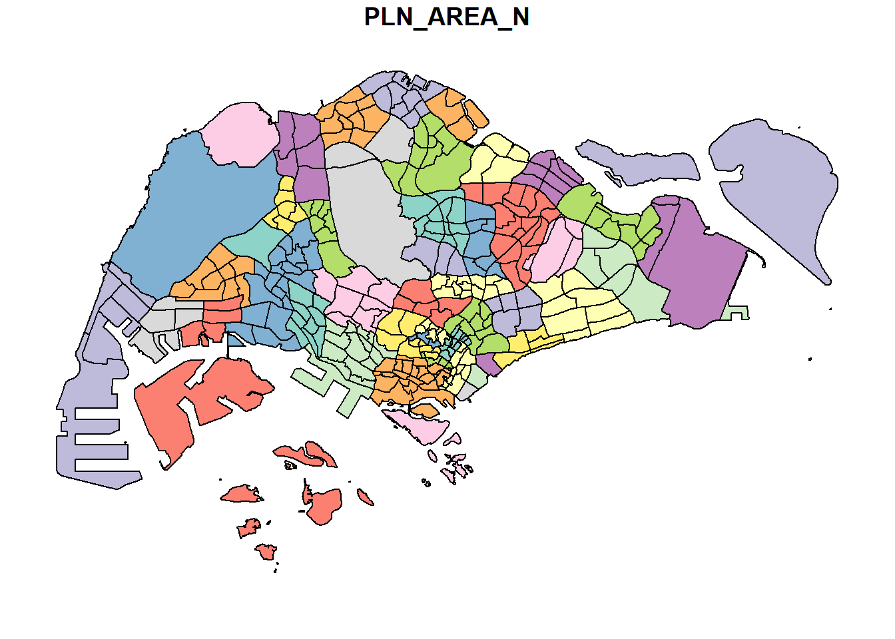

pacman::p_load(sf, tidyverse)Data Wrangling with R
Geospatial Data
This post covers the basic wrangling technique for geospatial data such as -
Transformation of coordinate systems;
Conversion of aspatial data into a sf data frame;
Exploratory Data Analysis (EDA) with ggplot2 package.
1. INITIALISATION
1.1 Loading R Packages
The following are the packages required for the hands-on exercise :
1.2 Data Importation
1.2.1 Import Geospatial Data
1.2.1.1 Polygon feature data in shapefile format
Import Singapore Master Plan 2014 Subzone Boundary from data.gov.sg into mpsz simple feature data frame -
mpsz = st_read(dsn = "data/geospatial",
layer = "MP14_SUBZONE_WEB_PL")Reading layer `MP14_SUBZONE_WEB_PL' from data source
`D:\jephOstan\geospatial_jtz\ho\data\geospatial' using driver `ESRI Shapefile'
Simple feature collection with 323 features and 15 fields
Geometry type: MULTIPOLYGON
Dimension: XY
Bounding box: xmin: 2667.538 ymin: 15748.72 xmax: 56396.44 ymax: 50256.33
Projected CRS: SVY21Metrics used in the output above -
Geometry type : Refers to the type of shapes represented in the spatial data.
Dimension : “XY” means that the geometries are defined in a two-dimensional space with an X (longitude) and a Y (latitude) coordinate.
Bounding Box : The bounding box represents the extent of the spatial dataset, defined by the minimum and maximum coordinates in each dimension.
- “xmin”, “ymin”, “xmax”, and “ymax” represent the minimum longitude, minimum latitude, maximum longitude, and maximum latitude, respectively.
Projected CRS : Coordinate Reference System (CRS) is a system that uses one or more numbers or coordinates to determine the position of a point or a geometric element uniquely.
SVY21is a specific type of CRS, which stands for the Singapore Transverse Mercator projection, used for creating maps and conducting land surveys in Singapore.
1.2.1.2 Polyline feature data in shapefile format
Import cycling path from LTADataMall
cyclingPath = st_read(dsn = "data/geospatial",
layer = "CyclingPath")Reading layer `CyclingPath' from data source
`D:\jephOstan\geospatial_jtz\ho\data\geospatial' using driver `ESRI Shapefile'
Simple feature collection with 2248 features and 2 fields
Geometry type: MULTILINESTRING
Dimension: XY
Bounding box: xmin: 11854.32 ymin: 28347.98 xmax: 42626.09 ymax: 48948.15
Projected CRS: SVY211.2.1.3 GIS data in kml format
preschool = st_read("data/geospatial/pre-schools-location-kml.kml")Reading layer `PRESCHOOLS_LOCATION' from data source
`D:\jephOstan\geospatial_jtz\ho\data\geospatial\pre-schools-location-kml.kml'
using driver `KML'
Simple feature collection with 1925 features and 2 fields
Geometry type: POINT
Dimension: XYZ
Bounding box: xmin: 103.6824 ymin: 1.247759 xmax: 103.9897 ymax: 1.462134
z_range: zmin: 0 zmax: 0
Geodetic CRS: WGS 84Unlike SVY21 for other dataset, this preschool dataset is WGS 84 - which stands for World Geodetic System 1984 - a global reference coordinate system used by the Global Positioning System (GPS).
1.2.2 Import Aspatial Data
listings <- read_csv("data/aspatial/listings.csv")1.3 Data Inspection
1.3.1 Retrieve Information
st_geometry(mpsz)Geometry set for 323 features
Geometry type: MULTIPOLYGON
Dimension: XY
Bounding box: xmin: 2667.538 ymin: 15748.72 xmax: 56396.44 ymax: 50256.33
Projected CRS: SVY21
First 5 geometries:With “mpsz$geom” or specifically indiate the position of the geometry column, “mpsz[[1]]” can also produced the same output as shown above.
glimpse(mpsz,60)Rows: 323
Columns: 16
$ OBJECTID <int> 1, 2, 3, 4, 5, 6, 7, 8, 9, 10, 11, 12, …
$ SUBZONE_NO <int> 1, 1, 3, 8, 3, 7, 9, 2, 13, 7, 12, 6, 1…
$ SUBZONE_N <chr> "MARINA SOUTH", "PEARL'S HILL", "BOAT Q…
$ SUBZONE_C <chr> "MSSZ01", "OTSZ01", "SRSZ03", "BMSZ08",…
$ CA_IND <chr> "Y", "Y", "Y", "N", "N", "N", "N", "Y",…
$ PLN_AREA_N <chr> "MARINA SOUTH", "OUTRAM", "SINGAPORE RI…
$ PLN_AREA_C <chr> "MS", "OT", "SR", "BM", "BM", "BM", "BM…
$ REGION_N <chr> "CENTRAL REGION", "CENTRAL REGION", "CE…
$ REGION_C <chr> "CR", "CR", "CR", "CR", "CR", "CR", "CR…
$ INC_CRC <chr> "5ED7EB253F99252E", "8C7149B9EB32EEFC",…
$ FMEL_UPD_D <date> 2014-12-05, 2014-12-05, 2014-12-05, 20…
$ X_ADDR <dbl> 31595.84, 28679.06, 29654.96, 26782.83,…
$ Y_ADDR <dbl> 29220.19, 29782.05, 29974.66, 29933.77,…
$ SHAPE_Leng <dbl> 5267.381, 3506.107, 1740.926, 3313.625,…
$ SHAPE_Area <dbl> 1630379.3, 559816.2, 160807.5, 595428.9…
$ geometry <MULTIPOLYGON [m]> MULTIPOLYGON (((31495.56 3…head(mpsz, n = 2)Simple feature collection with 2 features and 15 fields
Geometry type: MULTIPOLYGON
Dimension: XY
Bounding box: xmin: 28160.23 ymin: 28369.47 xmax: 32362.39 ymax: 30177.73
Projected CRS: SVY21
OBJECTID SUBZONE_NO SUBZONE_N SUBZONE_C CA_IND PLN_AREA_N PLN_AREA_C
1 1 1 MARINA SOUTH MSSZ01 Y MARINA SOUTH MS
2 2 1 PEARL'S HILL OTSZ01 Y OUTRAM OT
REGION_N REGION_C INC_CRC FMEL_UPD_D X_ADDR Y_ADDR
1 CENTRAL REGION CR 5ED7EB253F99252E 2014-12-05 31595.84 29220.19
2 CENTRAL REGION CR 8C7149B9EB32EEFC 2014-12-05 28679.06 29782.05
SHAPE_Leng SHAPE_Area geometry
1 5267.381 1630379.3 MULTIPOLYGON (((31495.56 30...
2 3506.107 559816.2 MULTIPOLYGON (((29092.28 30...list(listings)[[1]]
# A tibble: 4,161 × 18
id name host_id host_name neighbourhood_group neighbourhood latitude
<dbl> <chr> <dbl> <chr> <chr> <chr> <dbl>
1 50646 Pleasant… 227796 Sujatha Central Region Bukit Timah 1.33
2 71609 Ensuite … 367042 Belinda East Region Tampines 1.35
3 71896 B&B Roo… 367042 Belinda East Region Tampines 1.35
4 71903 Room 2-n… 367042 Belinda East Region Tampines 1.35
5 275344 15 mins … 1439258 Kay Central Region Bukit Merah 1.29
6 289234 Booking … 367042 Belinda East Region Tampines 1.34
7 294281 5 mins w… 1521514 Elizabeth Central Region Newton 1.31
8 324945 Cozy Blu… 1439258 Kay Central Region Bukit Merah 1.29
9 330089 Cozy Blu… 1439258 Kay Central Region Bukit Merah 1.29
10 330095 10 mins … 1439258 Kay Central Region Bukit Merah 1.29
# ℹ 4,151 more rows
# ℹ 11 more variables: longitude <dbl>, room_type <chr>, price <dbl>,
# minimum_nights <dbl>, number_of_reviews <dbl>, last_review <date>,
# reviews_per_month <dbl>, calculated_host_listings_count <dbl>,
# availability_365 <dbl>, number_of_reviews_ltm <dbl>, license <chr>From the output above, latitude and longitude are in decimal degree format, which best assumes it’s in wgs84 Geographic Coordinate System.
1.4 Data Visualisation
1.4.1 Retrieve Information
plot(mpsz)Plot only the boundaries - combine both plot( ) together with st_geometry( ) to specifically get the geometry details for plot( ) to plot.
plot(st_geometry(mpsz))
or, specifically indicate which attribute / variable to plot.
plot(mpsz["PLN_AREA_N"])
2. DATA PROCESSING
2.1 Projection Transformation
2.1.1 Inspect & Edit the EPSG Code
2 common issues encountered when importing geospatial data -
Shapefile with missing .proj file.
The projected CRS is wrongly assigned.
st_crs(mpsz)Coordinate Reference System:
User input: SVY21
wkt:
PROJCRS["SVY21",
BASEGEOGCRS["SVY21[WGS84]",
DATUM["World Geodetic System 1984",
ELLIPSOID["WGS 84",6378137,298.257223563,
LENGTHUNIT["metre",1]],
ID["EPSG",6326]],
PRIMEM["Greenwich",0,
ANGLEUNIT["Degree",0.0174532925199433]]],
CONVERSION["unnamed",
METHOD["Transverse Mercator",
ID["EPSG",9807]],
PARAMETER["Latitude of natural origin",1.36666666666667,
ANGLEUNIT["Degree",0.0174532925199433],
ID["EPSG",8801]],
PARAMETER["Longitude of natural origin",103.833333333333,
ANGLEUNIT["Degree",0.0174532925199433],
ID["EPSG",8802]],
PARAMETER["Scale factor at natural origin",1,
SCALEUNIT["unity",1],
ID["EPSG",8805]],
PARAMETER["False easting",28001.642,
LENGTHUNIT["metre",1],
ID["EPSG",8806]],
PARAMETER["False northing",38744.572,
LENGTHUNIT["metre",1],
ID["EPSG",8807]]],
CS[Cartesian,2],
AXIS["(E)",east,
ORDER[1],
LENGTHUNIT["metre",1,
ID["EPSG",9001]]],
AXIS["(N)",north,
ORDER[2],
LENGTHUNIT["metre",1,
ID["EPSG",9001]]]]The EPSG code for “svy21” should be 3414, not 9001 as shown above.
mpsz3414 <- st_set_crs(mpsz, 3414)2.1.2 Transform Geographic Coordinate System to Projected CRS
preschool3414 <- st_transform(preschool,
crs = 3414)2.2 Aspatial Data Frame Transformation
listings_sf <- st_as_sf(listings,
coords = c("longitude", "latitude"),
crs = 4326) %>%
st_transform(crs = 3414)glimpse(listings_sf, 70)Rows: 4,161
Columns: 17
$ id <dbl> 50646, 71609, 71896, 71903, 2…
$ name <chr> "Pleasant Room along Bukit Ti…
$ host_id <dbl> 227796, 367042, 367042, 36704…
$ host_name <chr> "Sujatha", "Belinda", "Belind…
$ neighbourhood_group <chr> "Central Region", "East Regio…
$ neighbourhood <chr> "Bukit Timah", "Tampines", "T…
$ room_type <chr> "Private room", "Private room…
$ price <dbl> 80, 145, 85, 85, 49, 184, 79,…
$ minimum_nights <dbl> 92, 92, 92, 92, 60, 92, 92, 6…
$ number_of_reviews <dbl> 18, 20, 24, 47, 14, 12, 133, …
$ last_review <date> 2014-12-26, 2020-01-17, 2019…
$ reviews_per_month <dbl> 0.18, 0.15, 0.18, 0.34, 0.11,…
$ calculated_host_listings_count <dbl> 1, 6, 6, 6, 44, 6, 7, 44, 44,…
$ availability_365 <dbl> 365, 340, 265, 365, 296, 285,…
$ number_of_reviews_ltm <dbl> 0, 0, 0, 0, 1, 0, 0, 3, 2, 0,…
$ license <chr> NA, NA, NA, NA, "S0399", NA, …
$ geometry <POINT [m]> POINT (22646.02 35167.9…A new column, geometry is introduced while longitude & latitude are dropped from the data frame.